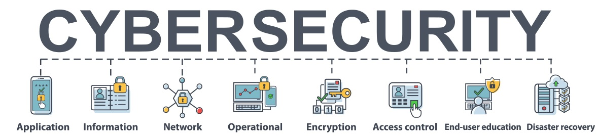

Cibersegurança: o que é, importância, tipos e carreira na área
Para entender a importância da cibersegurança, basta fazer uma rápida reflexão.
Quantos dados você fornece às empresas em compras online?
Pense em endereço, senhas, números de cartão de crédito e mais.
Todas são informações sigilosas e que devem ser protegidas com cuidado, longe de pessoas mal-intencionadas na internet.
O mesmo acontece com as informações de negócios das empresas e governos: investimentos, balancetes financeiros e planejamentos devem ser guardados a sete chaves.
É aí que entra a cibersegurança, para garantir que tais dados só estejam acessíveis a quem possui autorização para isso.
Com o armazenamento em nuvem sendo integrado à realidade de cada vez mais empresas, cresce também a demanda pela proteção, o que se reflete no mercado de trabalho.
Não por acaso, há quem aposte no profissional de cibersegurança como um dos mais requisitados atualmente, a exemplo do que afirmou neste artigo Gina Van Dijk, diretora da International Information Systems Security Certification Consortium na América Latina.
Neste texto que você começa a ler agora, vamos explicar o que é cibersegurança, avançar no conceito e entender por que a área representa uma das profissões do futuro.
Confira os tópicos que preparamos para a sua leitura:
O que é cibersegurança?
Como funciona a cibersegurança?
Qual a importância da cibersegurança?
Quais são os tipos de cibersegurança?
Cibersegurança x segurança da informação: as diferenças
O papel da cibersegurança
O que é segurança da informação?
Cibersegurança no Brasil
Cibersegurança no mundo
Exemplos de ameaças combatidas pela cibersegurança
O que fazer para garantir a cibersegurança nas empresas?
A importância da cibersegurança na indústria 4.0
Para entender a importância da cibersegurança, basta fazer uma rápida reflexão.
Quantos dados você fornece às empresas em compras online?
Pense em endereço, senhas, números de cartão de crédito e mais.
Todas são informações sigilosas e que devem ser protegidas com cuidado, longe de pessoas mal-intencionadas na internet.
O mesmo acontece com as informações de negócios das empresas e governos: investimentos, balancetes financeiros e planejamentos devem ser guardados a sete chaves.
É aí que entra a cibersegurança, para garantir que tais dados só estejam acessíveis a quem possui autorização para isso.
Com o armazenamento em nuvem sendo integrado à realidade de cada vez mais empresas, cresce também a demanda pela proteção, o que se reflete no mercado de trabalho.
Não por acaso, há quem aposte no profissional de cibersegurança como um dos mais requisitados atualmente, a exemplo do que afirmou neste artigo Gina Van Dijk, diretora da International Information Systems Security Certification Consortium na América Latina.
Neste texto que você começa a ler agora, vamos explicar o que é cibersegurança, avançar no conceito e entender por que a área representa uma das profissões do futuro.
Confira os tópicos que preparamos para a sua leitura:
O que é cibersegurança?
Como funciona a cibersegurança?
Qual a importância da cibersegurança?
Quais são os tipos de cibersegurança?
Cibersegurança x segurança da informação: as diferenças
O papel da cibersegurança
O que é segurança da informação?
Cibersegurança no Brasil
Cibersegurança no mundo
Exemplos de ameaças combatidas pela cibersegurança
O que fazer para garantir a cibersegurança nas empresas?
A importância da cibersegurança na indústria 4.0
As principais tendências de cibersegurança para os próximos anos
Profissões do futuro e cibersegurança
Quais são as principais atribuições de um profissional de cibersegurança?
Tipos de cargos e profissões relacionados à cibersegurança
Exemplos de empresas de cibersegurança
5 razões para se especializar na carreira em cibersegurança
Os melhores livros de cibersegurança
Quais são os melhores cursos de cibersegurança?
Existe alguma pós-graduação em cibersegurança?
Posso fazer MBA em gestão de cibersegurança?